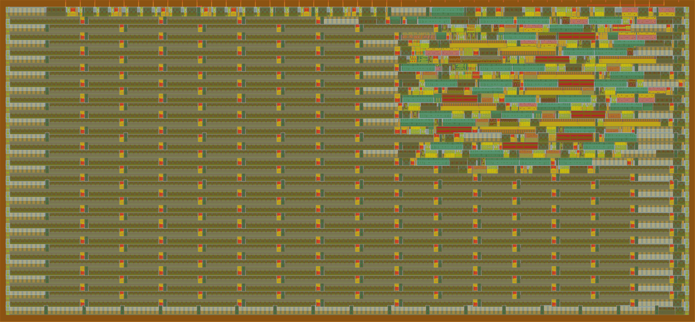
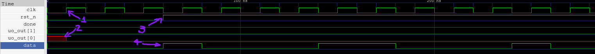
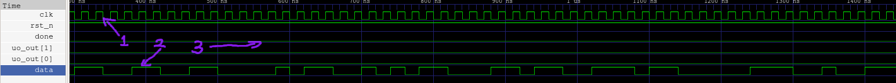
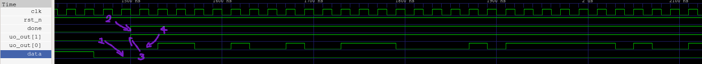

A reflected CRC32 implementation in verilog.
This is a relatively simple project, with only 2 inputs (not including
clock and reset) and 2 outputs (one of wich being an echo of one of the
inputs).
CRC stands for cyclic redundancy check, and the 32 means it outputs a
32 bit checksum.
It is used in things like ZIP, Ethernet and PNG.
The CRC algorithm divides the input by a binary number derived from a
polynomial.
More specifically the coeficients of the polynomial, so for an example
CRC4 algorithm, lets take the arbitrary polynomial
x⁴+x³+x,
we have the coeficients 1x⁴+1x³+0x²+1x¹+0x⁰, giving us the
number 11010.
Now to calculate our checksum of an arbitrary input, say
1011100, we:
1011100 0000 <-- we pad the input with the polynomial grade number of zeroes
11010 <-- xor by the polynomial number
------------
01101000000next shift over to the next 1 in the result
0110100 0000
11010
----------- <-- repeat
0000000 0000In this case we got all zeroes, which means the checksum is
0.
A wire is what is called a net, it describes a physical
connection.
It can not store anything, and must be continuosly assigned to something
using an assign statement.
A reg is a variable, can hold a value, and is assigned
inside an always or initial block.
`default_nettype none // Disables implicit nets
module tt_um_crc32 ( // declares the module
input wire [7:0] ui_in, // Dedicated inputs
output wire [7:0] uo_out, // Dedicated outputs
input wire [7:0] uio_in, // IOs: Input path
output wire [7:0] uio_out, // IOs: Output path
output wire [7:0] uio_oe, // IOs: Enable path (active high: 0=input, 1=output)
input wire ena, // always 1 when the design is powered, so you can ignore it
input wire clk, // clock
input wire rst_n // reset_n - low to reset
);
reg [31:0] crc;
reg [31:0] next_crc; // declarations of reg:s and net:s
wire done;
assign done = ui_in[1];// continuos assignment of wire, done is always equal to whatever ui_in[1] is at that time
wire fb; // Declaring the feedback bit
assign fb = crc[31] ^ ui_in[0]; // Continuosly assigning the feedback bit as the first bit in the register xor:ed against the input.
always @(*) begin
next_crc = crc;
if (!done) begin
next_crc = crc << 1; // shifting over one bit
next_crc[26] = fb ^ next_crc[26]; // actually doing the CRC32
next_crc[23] = fb ^ next_crc[23];
next_crc[22] = fb ^ next_crc[22];
next_crc[16] = fb ^ next_crc[16];
next_crc[12] = fb ^ next_crc[12];
next_crc[11] = fb ^ next_crc[11];
next_crc[10] = fb ^ next_crc[10];
next_crc[8 ] = fb ^ next_crc[8 ];
next_crc[7 ] = fb ^ next_crc[7 ];
next_crc[5 ] = fb ^ next_crc[5 ];
next_crc[4 ] = fb ^ next_crc[4 ];
next_crc[2 ] = fb ^ next_crc[2 ];
next_crc[1 ] = fb ^ next_crc[1 ];
next_crc[0 ] = fb ^ next_crc[0 ];
end
end
always @(posedge clk) begin
if (!rst_n) begin
crc <= 32'hFFFFFFFF; // init at reset
end
else if (!done) crc <= next_crc;
end
wire [31:0] rev;
genvar i;
generate
for (i = 0; i < 32; i = i + 1) begin // Reversing the register at output
assign rev[i] = crc[31-i];
end
endgenerate
wire [31:0] out;
assign out = ~rev; // inverting the reversed register at output
reg sout;
reg [4:0] count2;
reg shifting;
always @(posedge clk) begin
if (!rst_n) begin
sout <= 0;
count2 <= 0; // initing at reset
shifting <= 1;
end
else if (done && shifting) begin
sout <= out[count2]; // shifting the register out, one bit per clock on output
if (count2 == 31) shifting <= 0;
else count2 <= count2 + 1; // counting the bits for output
end
end
assign uio_oe = 0;
assign uio_out = 0; // assigning unused IO:s
assign uo_out[7:2] = 0;
wire _unused = &{ena, ui_in[7:2], uio_in, 1'b0};
assign uo_out[0] = sout;
assign uo_out[1] = done; // assigning outputs
endmoduleI’ll now go through the code one always block at a
time
always @(*) begin
next_crc = crc;
if (!done) begin
next_crc = crc << 1;
next_crc[26] = fb ^ next_crc[26];
next_crc[23] = fb ^ next_crc[23];
next_crc[22] = fb ^ next_crc[22];
next_crc[16] = fb ^ next_crc[16];
next_crc[12] = fb ^ next_crc[12];
next_crc[11] = fb ^ next_crc[11];
next_crc[10] = fb ^ next_crc[10];
next_crc[8 ] = fb ^ next_crc[8 ];
next_crc[7 ] = fb ^ next_crc[7 ];
next_crc[5 ] = fb ^ next_crc[5 ];
next_crc[4 ] = fb ^ next_crc[4 ];
next_crc[2 ] = fb ^ next_crc[2 ];
next_crc[1 ] = fb ^ next_crc[1 ];
next_crc[0 ] = fb ^ next_crc[0 ];
end
endThe always @(*) means that the code inside the block
runs anytime anything on the right hand side of an assignment inside the
block is updated.
For example, this is the first line of the block:
Left hand side
↓
next_crc = crc;
↑
Right hand sideSo anytime the right hand side (crc) is updated, all of the code in the block is run.
This
if (!done) beginmeans that the code inside the if statement (until the next
end) will run if done is 0.
This is because when all the input has been fed, and done goes high, we
want to output the register without updating it further.
This line
next_crc = crc << 1;shifts the register one bit to the left.
These next couple of lines
next_crc[26] = fb ^ next_crc[26];
next_crc[23] = fb ^ next_crc[23];
next_crc[22] = fb ^ next_crc[22];
next_crc[16] = fb ^ next_crc[16];
next_crc[12] = fb ^ next_crc[12];
next_crc[11] = fb ^ next_crc[11];
next_crc[10] = fb ^ next_crc[10];
next_crc[8 ] = fb ^ next_crc[8 ];
next_crc[7 ] = fb ^ next_crc[7 ];
next_crc[5 ] = fb ^ next_crc[5 ];
next_crc[4 ] = fb ^ next_crc[4 ];
next_crc[2 ] = fb ^ next_crc[2 ];
next_crc[1 ] = fb ^ next_crc[1 ];
next_crc[0 ] = fb ^ next_crc[0 ];Implements the xor taps with the feedback bit according to the
polynomial
x³²+x²⁶+x²³+x²²+x¹⁶+x¹²+x¹¹+x¹⁰+x⁸+x⁷+x⁵+x⁴+x²+x¹+x⁰. Now
notice how the polynomial has an x³² term, but the code
dosent. This is because that term is already shifted out of the
register. Doing these taps is mathematically equivalent to the binary
division done in the example.
always @(posedge clk) begin
if (!rst_n) begin
crc <= 32'hFFFFFFFF;
end
else if (!done) crc <= next_crc;
endThis
always @(posedge clk) beginagain means that the code inside the block runs anytime
clk is on the positive edge, so it updates when
clk goes from 0 to 1, but not
1 to 0.
This,
if (!rst_n) begin
crc <= 32'hFFFFFFFF;
endscince reset is active low, means that when reset is active, it
initializes crc to the hex value 0xFFFFFFFF.
This is so that the register starts as a clean slate whenever a new
checksum is to be calculated, and not with whatever leftover there is
from the previous calculation. The reason it’s initiated to all ones and
not zeroes is because if the register is all zeroes, an input with any
amount of zeroes prepended will give the same checksum. So for example,
11010 would give the same checksum as
000011010.
As we saw in the previous always block, we set
next_crc = crc; and update what the next register
value should be,
and in this block crc is set to next_crc’s
value:
else if (!done) crc <= next_crc;generate
for (i = 0; i < 32; i = i + 1) begin
assign rev[i] = crc[31-i];
end
endgenerateThis is a generate for loop. It differs from the always block in the way that, instead of behavioral repetition like in an always block, repetition only uses a wire, no logic required.
All it does is reverse crc and put it in
rev.
always @(posedge clk) begin
if (!rst_n) begin
sout <= 0;
count2 <= 0;
shifting <= 1;
end
else if (done && shifting) begin
sout <= out[count2];
if (count2 == 31) shifting <= 0;
else count2 <= count2 + 1;
end
endThe first
if (!rst_n)just initializes on reset, nothing too fancy, but the rest is what
counter selects the register one bit at a time into sout
for output.
The shifting variable tells us if we are still outputing
the reg, or if everything has been output already. That’s why its
counting, to know when its output out all 32 bits.
else if (done && shifting) begin <-- checks if we are actively shifting output out
sout <= out[count2]; <-- selects the current bit into sout
if (count2 == 31) shifting <= 0; <-- Sees if all bits are output, if so set shifting to 0
else count2 <= count2 + 1; <-- otherwise count up
endHere im going to talk about the small code snippets between the blocks left unexplained, from top to bottom.
reg [31:0] crc;
reg [31:0] next_crc;
wire done;
assign done = ui_in[1];
wire fb;
assign fb = crc[31] ^ ui_in[0];This is from directly above the first always block. All lines
beginning with either reg or wire are
declaring either a reg or wire
respectively.
Take for example this line:
reg [31:0] crc;is declaring crc as a 32-bit (bit 31 to 0) register of
flip-flops. Compare that to next_crc, which is declared the
exact same way, but dosent have flip-flops, and is instead just logic.
The difference is in where the two are assigned. next_crc
is assigned in an always @(*) block, while crc
in an always @(posedge clk). The difference being that
crc is assigned in a clocked, non-blocking always block,
while next_crc is assigned in a blocking combinational
always block.
The difference between blocking (=) and non-blocking
(<=) is that in always blocks with blocking assignments,
the assignments are assigned in order from top to bottom, but in
non-blocking assignments, everything is done at the same time, in
paralell, and reads are done before writes.
The first assign statement just sets done
equal to ui_in[1], which is the done input.
The second assign statement assigns the feedback bit as the
first register position xor:ed to the input, which is used for the xor
taps.
This line
genvar i;can be found before the generate block. A genvar is a special variable used in generate loops to control how instances are created during elaboration.
assign out = ~rev;This line is located below the generate block, and it bit inverses the reversed register and assigns out to it. This is because the definition of CRC32 calls for this inversion, and the reversing is the “reflected” part of the reflected CRC32.
assign uio_oe = 0;
assign uio_out = 0;
assign uo_out[7:2] = 0;
wire _unused = &{ena, ui_in[7:2], uio_in, 1'b0};
assign uo_out[0] = sout;
assign uo_out[1] = done;These lines ties unused outputs to zero, RHS assigns unused inputs so the verilog linter dosent complain, and assigns the final used outputpins to sout and done.
Any code left unexplained is trivial, and left as an exercise for the reader.
Now, lets take a look at some of the computed waveforms

This is an image of the waveforms generated by the program plus a testbench, viewed in GTKwave. I have included some arrows with numbers to make it a bit easier.
Arrow number one is pointing at the clk signal. This is
what decides the timing of the chip.
Arrow number two is pointing at a red box from uo_out[0].
uo_out[0] is the output pin (sout in the
code), and the red box means it is uninitialized. This is because
sout isn’t initialised until the first clock, and we can se
that at the first clock, the red box turns into a 0.
Arrow number three is pointint at the posedge of rst_n.
Scince rst_n is active low, it going high means it turns
inactive. As soon as reset goes inactive the program starts reading
input on the next clock edge, and as we can see at arrow four, as soon
as reset goes inactive, the testbench starts feeding data bits to the
input.
Now for the next part of the waveform

This is about halfway through the simulation.
Arrow one is pointing at the clock. As you can see its still going,
and always will be. Arrow two is pointing at the data pin. It’s
continuing to feed data for the program to calculate the checksum with.
At arrow number three you can see that both the output pins and the
done signal are low, this is because the TB dosent drive
done high until ii’s fed all the input bits, one of the
outputs is an echo of done, and the second output is sout
which holds its reset value until the program starts outputing.

Now this one is a little bit more interesting. This is the end of the simulation.
As you can see at arrow one, the TB feeds it’s last input bit, a
zero.
After the last bit has been fed, at arrow two, the TB drives
done high, indicating that all input bits have been
fed.
At the same time, at arrow three, the programs uo_out[1]
goes high. This is because that output is simply an echo of the
done input.
Then, at arrow four, the program starts driving the output, the first
bit being a zero.
This section is about the trouble faced while developing this.
Finding out how the CRC32 algorithm works was the first hurdle, as
any search along the lines of CRC32 algorithm only gave
results on checksum calculators and the occasional uninformative
wikipedia page.
This is a combination of the previous header, and me being bad at
verilog, but it took me a really long time to get the CRC algorithm to
work in accordance with the standard. Most of the problems were with how
the register was output, but the testbench was also an issue. The TB was
waiting one clock signal after reset before outputing, meaning it was
processing an extra zero at the beginning. Another issue was that I in
the beginning had the done signal internally driven. This
both meant that the inputs had to be of fixed length, and due to the
above error, it was both reading an extra zero at the beginning, and
also not reading the last bit, making the output wrong.
Scince my program takes the input the input LSB first, and due to the
way verilog stores strings, inputing correctly requires this weird
modulo math that took me a while to figure out.
64 - 8*(n/8) + (n%8) is the math, it looks like 8*(n/8) is
just n, but scince n is an integer, verilog drops the remainder from the
division. Due to this, 8*(n/8) gets the nearest multiple of eight thats
smaller than or equal to n. This gets subtracted from 64, and then n
(mod 8) gets added to that. Now scince the data i was trying to feed was
“123456789” was 9 bytes, which is 72 bits (9*8), so to look at the last
bit being fed for example, 64-8*(71/8)+(71%8). Scince 71 isn’t divisible
by eight, we have to worry about verilogs integer division, so 71/8 is
about 8.9, drop the remainder to 8, multiply by 8, we get 64. 64-64 is
0, and 71 modulo 8 is 7, meaning the last bit fed is the bit at zero
indexed position 7.
To use it, first drop rst_n to 0 and hold for at least 1
clock cycle. Raise rst_n to 1 (not on a clock posedge) and
start feeding your input LSB first. The input is red on the clk posedge
from the very first posedge after rst_n is raised to 1, so
I adwise you start feeding the bit on the negedge before that. When the
entire message is fed, raise done high on the clock negedge
directly after the clock posedge where the last input bit was red. Start
reading the output LSB first from the first clock posedge after the done
signal has been red, that would be the secont clock posedge after done
was raised high.
It can be tested by compiling the test/tb_standalone.v
and src/project.v files, and simulating them with vvp. The
simulation should display either PASS or FAIL,
depending on the outcome of the test.
If you want to learn more about verilog you can check out this, and if you want to learn more about cyclic redundancy checks you can read this and this.